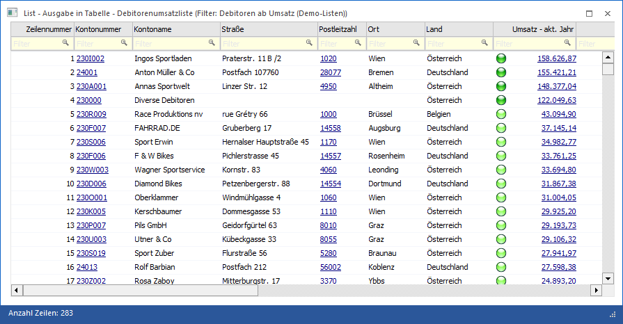
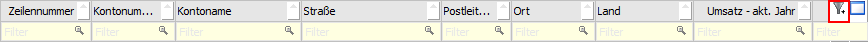
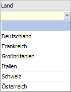
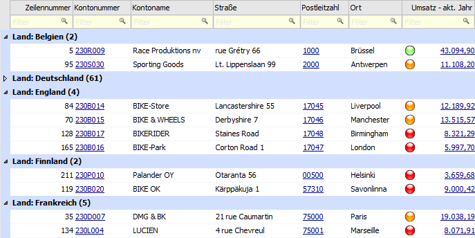
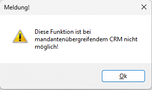
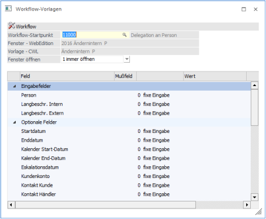

In diesem Fenster werden die Daten angezeigt, welche aus dem List-Assistenten mit der Option "Ausgabe Tabelle" erstellt wurden.

Für das Arbeiten in Tabellen stehen folgende Funktionen zur Verfügung:
Ø Suchzeile
Durch Anwahl des Hauptfilter-Symbols, welches zu sehen ist wenn der Mauszeiger auf die Überschriftszeile gelegt wird, kann eine Suchzeile aktiviert werden. In dieser Suchzeile kann durch Eingabe eines Begriffs in jeder Spalte schnell und zielgenau gesucht werden.
Beispiel

Eine Suche (Filterung) kann dabei jederzeit über das
Entfernen des Suchbegriffs oder durch Anwahl des  Symbols der Spalte rückgängig gemacht
werden.
Symbols der Spalte rückgängig gemacht
werden.
Hinweis
Wenn der Inhalt einer Spalte wiederkehrend ist, dann wird zur einfacheren Suche eine Auswahlliste angeboten.

Spaltenfunktionen
Innerhalb der Spalten können die speziellen Spaltenfunktionen über ein Pfeilsymbol aktiviert werden, wobei das Symbol angezeigt wird, wenn der Mauszeiger auf eine Spaltenüberschrift geführt wird. Bei Anwahl des Pfeilsymbols mit der linken Maustaste stehen folgende Möglichkeiten zur Verfügung:

Ø Spalte sortieren
Über die Auswahl "Aufsteigend Sortieren" bzw. "Absteigend Sortieren" kann der Inhalt der Spalte sortiert werden.
Hinweis 1
Sollte bereits in der Spalte sortiert werden, dann wird auf
die Art Sortierung durch ein  - bzw.
-Symbol hingewiesen.
- bzw.
-Symbol hingewiesen.
Hinweis 2
Die Sortierung wird auch durchgeführt, wenn direkt auf die Überschrift geklickt wird (d.h. nicht auf das Pfeilsymbol), Dabei erfolgt zunächst eine aufsteigende Sortierung und bei nochmaliger Anwahl der Überschrift eine absteigende Sortierung.
Ø Optimale Spaltenbreite
Über den Button "Optimale Spaltenbreite" wird automatisch die Spalte auf die optimale Größe eingestellt, so dass innerhalb der Spalte bei jedem Datensatz die entsprechenden Informationen komplett angezeigt werden können.
Ø Spalten anzeigen/verstecken
Mit Hilfe dieser Funktion wird das Fenster "Spalten anzeigen/verstecken" geöffnet. Hier kann der optische Aufbau der Tabelle (Reihenfolge der Spalten) angepasst werden.
Ø Spalte gruppieren
Über den Button "Spalte gruppieren" wird innerhalb der Tabelle nach dem Inhalt der Spalte gruppiert (bis zu 5 Ebenen sind möglich). Dieses hat folgende Auswirkungen:
ü Die Spalte wird aus dem Aufbau der Tabelle entfernt.
ü Pro gleichem Objekt der Spalte wird eine neue Zeile mit "Spaltenname: Objektname (Anzahl Datensätze)" gebildet und die zugehörigen Datensätze unter dieser aufgeführt.
ü Jede erzeugte Zeile (Gruppierung)
kann durch Anwahl des Buttons  geschlossen bzw. geöffnet werden.
geschlossen bzw. geöffnet werden.
ü Das Kontextmenü der rechten Maustaste (auf einer Gruppierungsüberschrift) bietet weitere Funktionen ("Alle Gruppierungen schließen", "Alle Gruppierungen öffnen" und "Gruppierung aufheben").
Hinweis
Um eine Gruppierung wieder aufzuheben wird auf die entsprechende Gruppierungsüberschrift mit der rechten Maustaste gedrückt und der Button "Gruppierung aufheben" ausgewählt.
Beispiel
Es wird in einer Debitorenliste nach der vorhandenen Spalte "Land" gruppiert.

Ø Spalte filtern
Über den Button "Spalte filtern" kann mit Hilfe des Fensters "Spaltenfilter" innerhalb der Spalte nach selbst zu definierenden Datenbereichen gefiltert werden (nähere Informationen siehe Kapitel "Spaltenfilter").
Nach Anwahl des Buttons "Ok" wird die getroffene Filterung
als Suchbegriff in die Suchzeile der Spalte übertragen und angewendet. Sofern
die Filterung nicht mehr benötigt wird, kann dieses über das Entfernen des
Suchbegriffs oder durch Anwahl des Symbols der Spalte entfernt werden.
Zusätzlich steht bei Anwahl des Pfeilsymbols die Auswahl "Spaltenfilter entfernen"
zur Verfügung.
Beispiel

Hinweis
Bei Spalten mit einem Datumsinhalt wird zusätzlich ein Untermenü mit folgenden Einträgen angeboten:

ü Bereich angeben…
Es wird der
Spaltenfilter geöffnet.
ü Nur Heute
Es werden nur
Datensätze mit dem aktuellen Tagesdatum angezeigt.
ü Von dieser Woche
Es werden nur
Datensätze der aktuellen Woche angezeigt.
ü Aktueller Monat (hier
"August")
Es werden nur Datensätze des aktuellen Monats angezeigt.
ü Seit Jahresanfang
Es werden nur
Datensätze des aktuellen Jahres angezeigt.
ü Älter
Es werden nur Datensätze
angezeigt, welche vor dem aktuellen Jahr liegen.
Ø Zeitpunkt auswählbar
Handelt es sich um eine Spalte des Typs "Datum", so wird zusätzlich die Auswahl "Zeitpunkt wählen" angeboten. Durch Aktivierung dieser Option wird bei Eingabefeldern der Spalte (benutzerdefinierte Variable des Typs "Datum") die Zeitpunkt-Auswahl zur Verfügung gestellt.
Beispiel

Weitere Funktionen
Folgende weitere Funktionen stehen in der Tabelle zur Verfügung:
Ø Suchen in Tabellenspalte
Neben dem Spaltenfilter oder der Suchzeile kann über die Funktion "Suchen in Tabellenspalte" immer in einer Spalte nach einem Begriff gesucht werden.

Die Suche kann über die folgenden Wege aufgerufen werden:
ü Kontextmenü der rechten
Maustaste
Im Kontextmenü der rechten Maustaste steht die Funktion "Suchen in
Tabellenspalte" zur Verfügung. Durch Anwahl der Funktion öffnet sich das Fenster
"Eingabe" in welchem ein Suchbegriff eingegeben werden kann. Mit Anwahl des
Buttons "OK" erfolgt die Suche in der Tabellenspalte.
ü Taste F6
Durch Anwahl der Taste
F6 öffnet sich das Fenster "Eingabe" in welchem ein Suchbegriff eingegeben
werden kann. Mit Anwahl des Buttons "OK" erfolgt die Suche in der
Tabellenspalte.
Hinweis
Wurde bereits ein Suchbegriff eingegeben, so wird durch nochmalige Anwahl der Taste F6 die Suche fortgesetzt.
ü Tastenkombination STRG + F6
Da
in einigen Programmfenstern die Taste F6 belegt ist, kann durch Anwahl der
Tastenkombination STRG + F6 ebenfalls das Fenster "Eingabe" geöffnet
werden. Nach Eingabe eines Suchbegriffs erfolgt durch Anwahl des Buttons "OK"
die Suche in der Tabellenspalte.
Hinweis
Wurde bereits ein Suchbegriff eingegeben, so wird durch nochmalige Anwahl der Tastenkombination STRG + F6 die Suche fortgesetzt.
Ø Mehrfachselektion Folgeschritt

ü Folgeschritte
Bei der Anzeige
der möglichen Folgeschritte zu den selektierten CRM-Fällen (welche grundsätzlich
nicht den gleichen Schrittstatus - gleiche Workflowschritt-Nummer - haben
müssen) wird der "Durchschnitt" aller Folgeschritte zu den einzelnen Fällen
herangezogen. Dabei werden maximal 10 Folgeschritte angezeigt. Gibt es keine
gemeinsamen Folgeschritte, so wird dies mit einer entsprechenden Meldung
dargestellt
Werden bei der
Mehrfachselektion Zeilen aus unterschiedlichen Mandanten
(mandantenübergreifendes CRM) selektiert, so erfolgt im Zuge der
Folgeschrittauswahl die Meldung, dass diese Funktion bei mandantenübergreifendem
CRM nicht möglich ist. Ebenso erfolgt diese Meldung, wenn eine Mehrfachselektion
von CRM-Fällen aus "nicht dem aktuellen Mandanten" erfolgt, und Folgeschritte
geschrieben werden sollen.

ü Workflow-Vorlagen
In den
Workflow-Vorlagen kann bei den entsprechenden Folgenschritten eingestellt sein,
dass das Fenster "immer geöffnet" wird - siehe Beispiel:

Wird nun die Funktion "CRM-Folgeschritte" aufgerufen, werden dort die gemeinsamen Folgeschritte angezeigt. Mit dem Auswählen des Folgeschrittes wird dieser für alle ausgewählten Zeilen durchgeführt.
Buttons
Ø Anzeigen
Durch Anwahl des Buttons "Anzeigen" bzw. der Taste F5 wird der Inhalt der Tabelle neu aufgebaut.
Ø Ende
Mit Hilfe des Buttons "Ende" bzw. der Taste ESC wird das Fenster geschlossen.
Ø Export
Bei Anwahl dieses Buttons wird der markierte Bereich der Tabelle nach Excel exportiert, wobei alle Spalten (samt Überschriften) übergeben werden. In weiterer Folge können diese Dateien über den Import-Button bzw. dem WinLine-Excel-Add-In wieder importiert werden. Hierbei werden folgende Listentypen unterstützt:
ü 01 - Debitorenstamm
ü 02 - Kreditorenstamm
ü 04 - Artikeldatei
ü 09 - Arbeitnehmerstamm
ü 13 - Interessenten (Kunden)
ü 20 - Adressbuch
ü 21 - Projekte
Hinweis
Zusätzlich sind folgende Punkte bei Nutzung des Exports zu beachten:
ü ODBC-Treiber
Der ODBC-Treiber,
welcher für den Export genutzt wird, kann in den Vorlagen-Parametern (WinLine
START - Vorlagen - Vorlagen-Parameter - Register "Optionen" - Option
"Standard-Excel-Treiber") definiert werden. Des Weiteren wird bei dem Export in
der Excel-Datei ein sogenannter "Namensbereich" gebildet, welcher den
Arbeitsbereich definiert. D.h. wenn Datensätze ergänzt werden sollen, dann muss
auch der Namensbereich angepasst werden.
ü WinLine mobile
Wenn mit einem
64bit WinLine Server gearbeitet wird, so müssen auf dem entsprechenden Server
auch die 64bit ODBC-Treiber installiert sein.
ü Lizenz
Für den Export wird eine
WinLine EXIM-Lizenz benötigt. Wenn diese nicht vorliegt können maximal 10
Datensätze exportiert werden.
Ø Import
Eine zuvor exportierte Excel-Datei (siehe Button "Export") kann über diesen Button wieder importiert werden. Hierbei stehen folgende Varianten zur Verfügung:
ü In Stammdaten importieren
Nach
der Auswahl der Excel-Datei erfolgt der Import. Hierbei werden die Datensätze
mit den Stammdaten abgeglichen, wodurch Stammdaten geändert oder neue Stammdaten
erzeugt werden.
ü Als Merkliste importieren
Nach
der Auswahl der Excel-Datei erfolgt der Import. Hierbei wird das Fernster
"Kampagne verändern" geöffnet und die Datensätze als Merkliste importiert.
ü In Stammdaten und als Merkliste
importieren
Nach der Auswahl der Excel-Datei erfolgt der Import. Hierbei
werden die Datensätze mit den Stammdaten abgeglichen, wodurch Stammdaten
geändert oder neue Stammdaten erzeugt werden. Im Anschluss daran öffnet sich das
Fenster "Kampagne verändern" und die Datensätze werden zusätzlich als Merkliste
importiert.
Hinweis
Folgende Punkte bei Nutzung des Imports zu beachten:
ü Datenprüfung
Bei allen Importen
werden die Daten auf Korrektheit geprüft und ggfs. der Import nicht
durchgeführt. Das EXIM-Protokoll, welches nach dem Import erzeugt wird, gibt
hierüber und über alle positiven Importe Auskunft.
ü Lizenz
Für den Import wird eine
WinLine EXIM-Lizenz benötigt. Wenn diese nicht vorliegt können maximal 10
Datensätze importiert werden.
Ø Vorschau CRM-Dokumente
Handelt es sich bei den Daten der Tabelle um CRM-Aktionen oder CRM-Fälle (Listentyp "16 - CRM Workflow", "17 - CRM Aktionen" bzw. "18 - CRM Workflow und Aktionen"), so steht der Button "Vorschau CRM-Dokumente" zur Verfügung. Durch Aktivierung des Buttons werden die CRM-Dokumente des markierten Eintrags in der Dokumenten-Vorschau angezeigt.